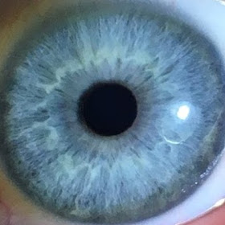

Zachary G. Goulet
Contact:
3200 w. Carroll Ave
Chicago IL, 60014
(612)-229-3060
Email: zgeogoulet@gmail.com

Special Skills
Skateboarding and Visual Art are my special abilities.
Skateboarding
Video Parts
- 2016
- Return of the GOB - The 1st GOB video
- Sears - The 2nd GOB video
- 2013
- TPC 6 - The 4th TPC video
- TPC 666 - The 5th TPC video
- Street Loafers 2D - The 2nd WHK video
- 2012
- TPC 3 - The 3rd TPC video
Visual Art
Art Experience
- 2023
- Solo Show at Midwest Coast Brewing | Chicago
- Solo Show at Philz Coffee | Chicago
- Solo Show at Circle Salon | Chicago
- The Other Art Fair 2023 | Chicago
- Solo Show at Ipsento | Chicago
- Small But Mighty | Addington Gallery | Chicago
- 2022
- BASQUAY | Artespace | Munich Germany
- The Artling’s Latest NFTs | Online NFT Release
- The Other Art Fair Chicago | Revel Space
- A Celebration of Pride | The Hoxton Chicago
- The Other Avatars by Saatchi Art | NFT release
- Out of The Blues solo show | Mchenry County College | Crystal Lake
- 2021
- The Other Art Fair | Revel Space | Chicago
- 2020
- The Nook | Agitator Gallery | Chicago
- Life in Progress | Hairpin Arts Center | Chicago
- Abstraction Juried Exhibition | ARC Gallery | Chicago
- 2019
- Turkey Turn-Up 2.0 | homiey Gallery | Chicago
- Chromatic Plane | Parlour and Ramp Gallery | Chicago
- Brazen | GAG Gallery | Chicago
- gnar Show | New Wave Coffee | Chicago
Artist Statement
Drawing on outsider art sensibilities, my search for balance within the 2D picture plane involves
layering labor-intensive patterns, shapes, and motifs- to create abstract narratives for the viewer to
mine visually.20+ years of skateboarding inspire the aesthetics in my work by how I use texture, trial
and error, vandalism, and unconventional painting techniques.I think of painting a residual representation
of how consciousness creates reality. I want my paintings to comment on the relevance of handmade objects
in a digitally saturated world.Other themes explored in my work include ideas about suppressed information,
inter-dimensional communication, supersynchronicites, freedom, and the human condition.
"Imagination rules the world"